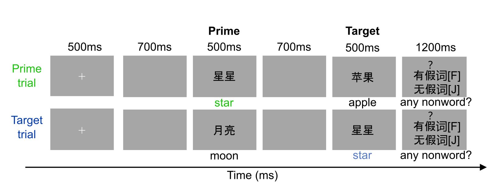

Stimuli
Our EEG experiment adopted a canonical two-word priming paradigm, with stimuli visually presented to the participants. We used 240 pairs of two-character Chinese nouns as critical stimuli. We randomly selected nouns to form `prime-target' pairs. Among these `prime-target' word pairs, some pairs (e.g., 月亮 (moon) -- 星星 (star)) are intuitively of a higher semantic similarity than others (e.g., 苹果 (apple) -- 月亮 (moon)).

The word categroies and word pairs are listed below:
Words in different categories (Download)
| Category | Words |
|---|---|
| 情感 | 愉快 幸福 悲伤 害怕 难过 生气 沮丧 激动 痛苦 困惑 兴奋 嫉妒 |
| 调料 | 食盐 胡椒 大蒜 白糖 辣椒 香料 生姜 陈醋 酱油 黄油 咖喱 香草 |
| 职业 | 医生 教师 律师 护士 演员 会计 牙医 歌手 秘书 经理 厨师 警察 |
| 体育 | 足球 篮球 击剑 垒球 网球 棒球 游泳 台球 排球 拳击 跑步 滑雪 |
| 天气 | 冰雹 飓风 雷雨 雪花 大风 洪水 闪电 台风 大雾 暴雨 阳光 打雷 |
| 着装 | 衬衫 长裤 袜子 内裤 裤子 内衣 短裤 夹克 毛衣 短裙 外套 西装 |
| 乐器 | 大鼓 吉他 长笛 钢琴 小号 黑管 古筝 提琴 长号 圆号 竖琴 琵琶 |
| 交通工具 | 汽车 巴士 卡车 飞机 火车 电车 货车 潜艇 轮船 摩托 马车 地铁 |
| 蔬菜 | 萝卜 莴苣 生菜 番茄 黄瓜 茄子 南瓜 土豆 芹菜 豌豆 菠菜 洋葱 |
| 昆虫 | 苍蝇 蚂蚁 毛虫 蜜蜂 蚊子 甲虫 臭虫 蚂蚱 蝴蝶 螳螂 蜘蛛 飞蛾 |
| 哺乳动物 | 斑马 豹子 山羊 狮子 黑熊 老虎 奶牛 大象 麋鹿 野猪 熊猫 松鼠 |
| 鸟类 | 鸽子 企鹅 鹦鹉 天鹅 公鸡 翠鸟 乌鸦 孔雀 鸭子 老鹰 海鸥 麻雀 |
| 饮料 | 白酒 果汁 香槟 绿茶 红茶 果茶 果酒 米酒 啤酒 牛奶 奶茶 咖啡 |
| 水果 | 苹果 梨子 葡萄 橙子 柠檬 香蕉 桃子 草莓 樱桃 菠萝 芒果 西瓜 |
| 食物 | 水饺 煎饼 馄饨 馅饼 粽子 布丁 蛋糕 沙拉 面条 米饭 包子 烧卖 |
| 月份 | 一月 二月 三月 四月 五月 六月 七月 八月 九月 十月 闰月 农历 |
| 家庭 | 爸爸 妈妈 儿子 女儿 哥哥 姐姐 表哥 叔叔 阿姨 表姐 妻子 丈夫 |
| 身体部位 | 额头 喉咙 嘴唇 牙齿 手掌 大腿 胳膊 鼻子 手臂 舌头 眼睛 耳朵 |
| 家具 | 电视 桌子 椅子 地毯 枕头 沙发 窗帘 台灯 橱柜 抽屉 冰箱 电灯 |
| 景观 | 火山 湖泊 河流 沙漠 冰川 小溪 海岸 瀑布 运河 森林 海洋 沙滩 |
| 疾病 | 感冒 头痛 疟疾 发烧 癌症 咳嗽 流感 癫痫 肺炎 肿瘤 中风 偏瘫 |
| 方位 | 东北 西北 西南 东南 上边 下边 前面 后面 顶部 底部 左边 右边 |
| 衣饰 | 项链 香水 皮包 钱包 领带 皮带 戒指 耳环 围巾 手套 帽子 鞋子 |
| 国家 | 中国 美国 德国 法国 英国 希腊 印度 埃及 韩国 日本 波兰 泰国 |
| 城市 | 北京 纽约 柏林 巴黎 伦敦 雅典 德里 开罗 釜山 东京 华沙 曼谷 |
The trials sample (Download).
It is generated by the Python script
- prime: display first
- target: display next
- same_category: whether the prime and the target were in the same category
- wordness: whether the target is a real word
- soa: interval (second) between the prime and target
- block: the block ID
| prime | target | same_category | wordness | soa | block |
|---|---|---|---|---|---|
| 鸭子 | 萄子 | True | False | 0.15 | 1 |
| 西北 | 蜜蜂 | False | True | 0.35 | 1 |
| 戒指 | 领带 | True | True | 0.35 | 1 |
| 蜘蛛 | 德国 | False | True | 0.15 | 1 |
| 螳螂 | 翠鸟 | False | True | 0.15 | 1 |
| 激动 | 阳光 | False | True | 0.15 | 1 |
| 马车 | 火车 | True | True | 0.15 | 1 |
| 松鼠 | 豹子 | True | True | 0.15 | 1 |
| 游泳 | 滑雪 | True | True | 0.15 | 1 |
| 水饺 | 包子 | True | True | 0.35 | 1 |
| 悲伤 | 胡球 | True | False | 0.35 | 1 |
| 巴黎 | 网帘 | True | False | 0.15 | 1 |
| 二月 | 裤子 | False | True | 0.15 | 1 |
| 马车 | 地铁 | True | True | 0.15 | 1 |
| 后面 | 右边 | True | True | 0.35 | 1 |
| 会计 | 经理 | True | True | 0.15 | 1 |
| 女儿 | 哥哥 | True | True | 0.15 | 1 |
| 牙齿 | 德里 | False | True | 0.35 | 1 |
| 蜘蛛 | 内衣 | False | True | 0.35 | 1 |
| 印度 | 瀑布 | False | True | 0.15 | 1 |
| 包子 | 米饭 | True | True | 0.35 | 1 |